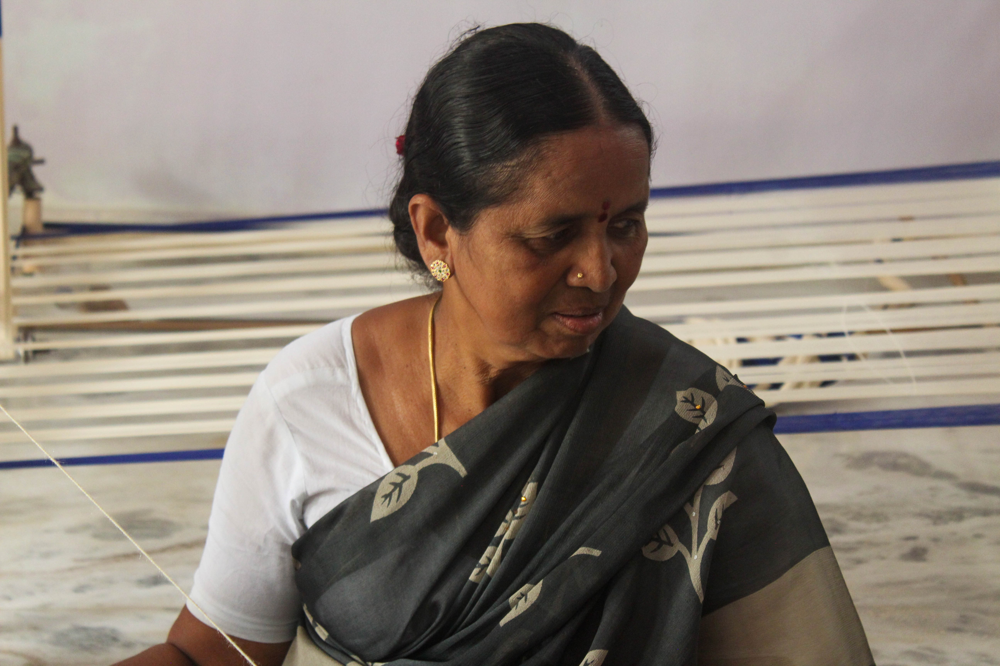
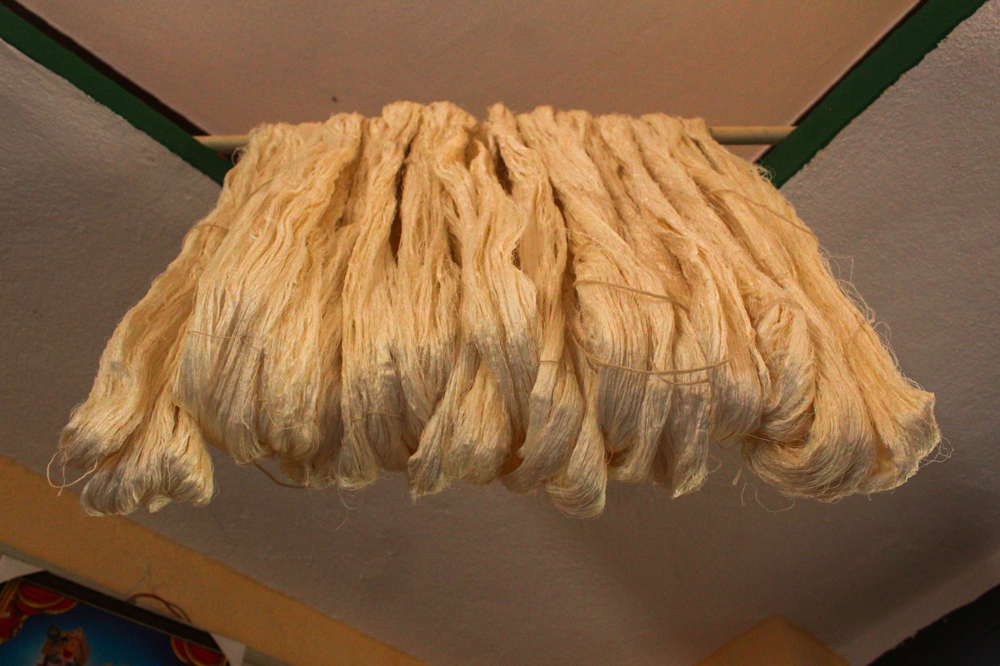
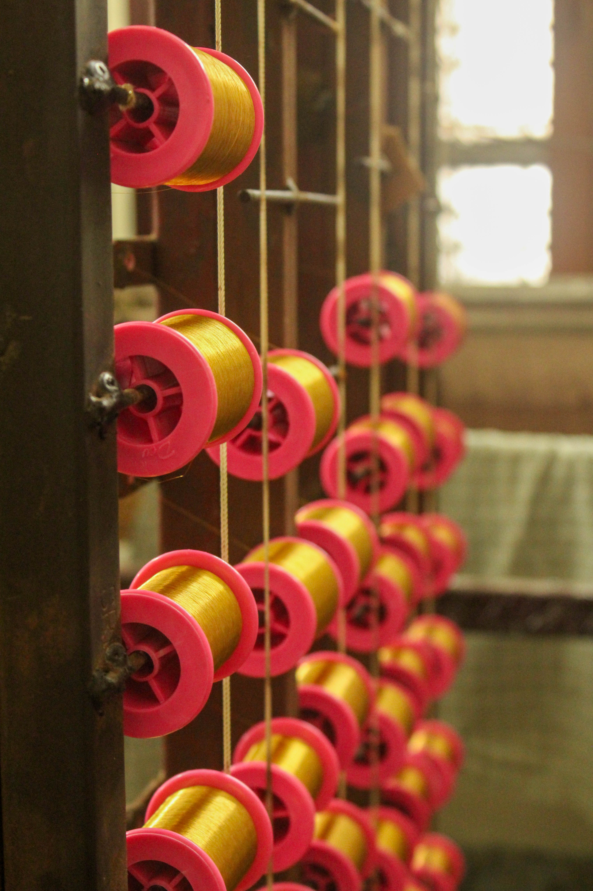
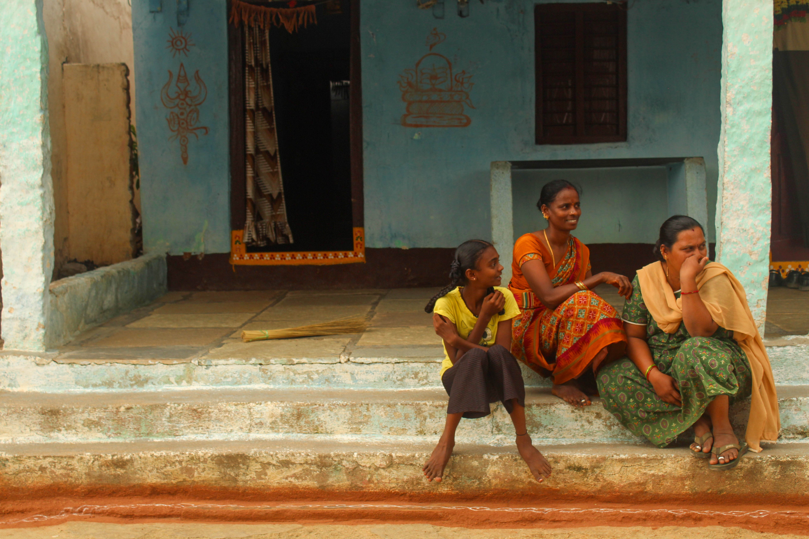
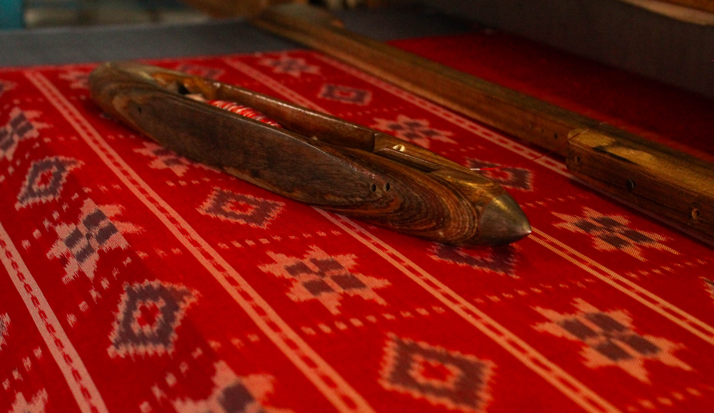

About Ikat
Where threads become living patterns
Ikat is not just woven; it is planned, tied, dyed, aligned, and patiently brought to life. Before the fabric appears, the design already lives inside the yarn.
Every blurred edge, bold motif, and colour shift carries the touch of an artisan who understands rhythm, patience, and precision.
In Lingala Ghanpur, this craft grows from a close community of skilled weavers. The Padmashali weaving tradition, women's contribution in preparation and dyeing, and the careful work of loom artisans together keep this heritage alive.
Bold Identity
Geometric motifs with a handmade softness.
Geometric motifs with a handmade softness.
Colour Rhythm
Yarns dyed in layers before weaving begins.
Yarns dyed in layers before weaving begins.
Human Skill
Every alignment depends on trained hands and eyes.
Every alignment depends on trained hands and eyes.
Living Heritage
A craft that supports culture, memory, and livelihood.
A craft that supports culture, memory, and livelihood.







